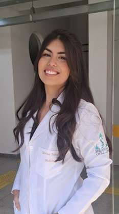
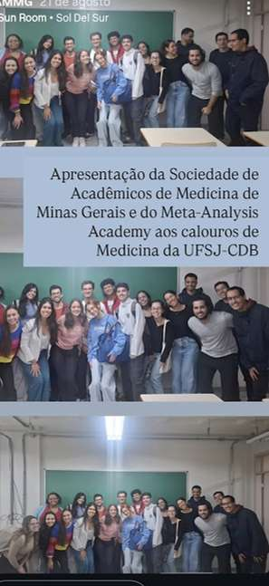
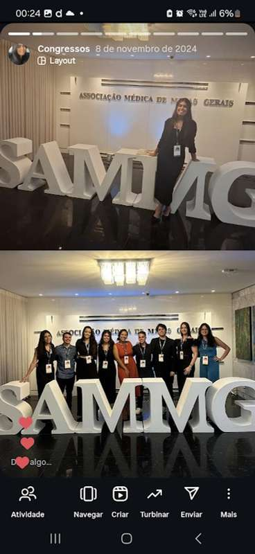
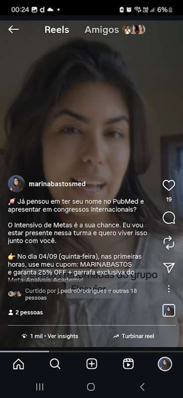
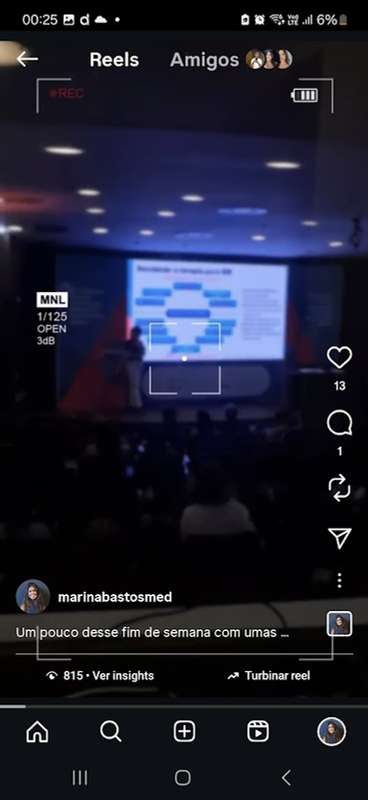
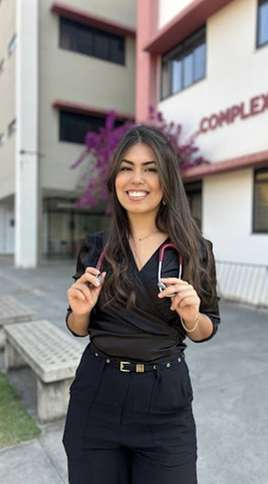

Marina Bastos
influenciadora | medicina e pesquisa

Quem sou
Natural de Belo Horizonte, 24 anos, sou acadêmica do 8º período de Medicina na Universidade Federal de São João del Rei (UFSJ). Minha jornada é marcada pela paixão pelo ensino, saúde, gestão, tecnologia e inovação.
Com conhecimentos em programação de websites, desenvolvimento de aplicativos e edição de mídias, venho construindo minha presença digital com consistência e estratégia. A busca por um currículo de destaque me levou a representar o Meta Analysis Academy, o MedCof e a Sociedade de Acadêmicos de Medicina de Minas Gerais (SAMMG), além de publicar meta-análise no periódico internacional The American Surgeon e apresentar trabalho como primeira autora no XXXII Congresso Brasileiro de Neurologia.
Sou inspirada a ensinar e a compartilhar conteúdo prático, tendo já atuado como professora de estatística, de alemão e de inglês. Hoje, meu foco está no compartilhamento de conteúdo em medicina baseada em evidências, em linguagem acessível e bem-humorada. Meu objetivo é mostrar um caminho ético, real e possível para a construção de uma carreira médica de sucesso no Brasil.
Resultados reais no Instagram
Dados auditados via Instagram Insights no período de 20 de outubro a 20 de novembro de 2026, somando 40 conteúdos publicados (30 Stories e 10 Reels).
16.588 em Stories e 8.732 em Reels nos últimos 30 dias.
Média de 553 visualizações por Story, com pico de 1.741 visualizações em um único Story.
Média de 873 visualizações por Reel, com pico de 2.746 visualizações em um único vídeo.
617 curtidas, 120 salvamentos, 70 comentários, 43 compartilhamentos e 39 respostas diretas.
Contas únicas alcançadas em um único Reel educativo e promocional (19 nov 2026).
120 salvamentos em Reels, 188 toques em figurinhas e 12 cliques diretos em links nos Stories.
Fatores confundidores em meta-análises & convite Meta Analysis Academy
2.746 visualizações · 2.276 contas alcançadas · 104 curtidas · 75 salvamentos
Prêmio de extensão universitária do projeto QualiRenal na UFSJ
1.741 visualizações · 1.275 contas alcançadas · 25 toques em figurinhas
Bastidores e celebração de publicação científica com equipe de pesquisa
1.648 visualizações · 1.088 contas alcançadas · 24 curtidas · 6 respostas
O @marinabastosmed é um diário de bordo honesto, focado em transmissão de conhecimento e bastidores. Nele, inspiro estudantes de Medicina a equilibrarem os estudos da faculdade com trabalho remunerado, estilo de vida saudável, lazer prudente e fé cristã.
Minha experiência como professora me permite explicar os diferenciais de produtos e serviços de forma clara, convincente e que gera conversão. Isso se reflete diretamente nos meus resultados: conteúdos educativos com recomendação de parceiros concentram os maiores índices de alcance e salvamentos do perfil.
Meu conteúdo é centrado em esforço, estratégia e busca por destaque, justificando sempre o custo-benefício real dos meus investimentos para uma audiência exigente e qualificada.
Diferente de perfis que focam apenas em lifestyle, meu conteúdo aprofunda em temas como pesquisa médica, medicina baseada em evidências e estatística, atraindo estudantes mais dedicados e jovens médicos que investem tempo e recursos na própria carreira.
Mais de 85% da audiência está concentrada entre 18 e 35 anos (graduandos, internos e médicos em início de carreira).
Equilíbrio de gênero (45% masculino)
Forte penetração nacional e em MG
O que posso construir com a sua marca
- Recebidos e demonstração em rotina real
- Publicidade em Reels, Stories e YouTube
- Ministração de palestras e aulas
- Tutoriais educativos focados em conversão
- Cobertura de eventos e congressos médicos
- Intermediação entre entidades acadêmicas
- Representação regional e embaixadoria
Como representante da Sociedade de Acadêmicos de Medicina de Minas Gerais (SAMMG), embaixadora do MedCof e representante do Meta Analysis Academy, instituições altamente respeitadas, minhas recomendações ganham peso adicional dentro da comunidade acadêmica.
Por selecionar apenas produtos, cursos, eventos e soluções em que realmente confio e utilizo na minha rotina de estudos e pesquisa, cada recomendação feita nos meus canais é recebida pela audiência como um selo de qualidade.




